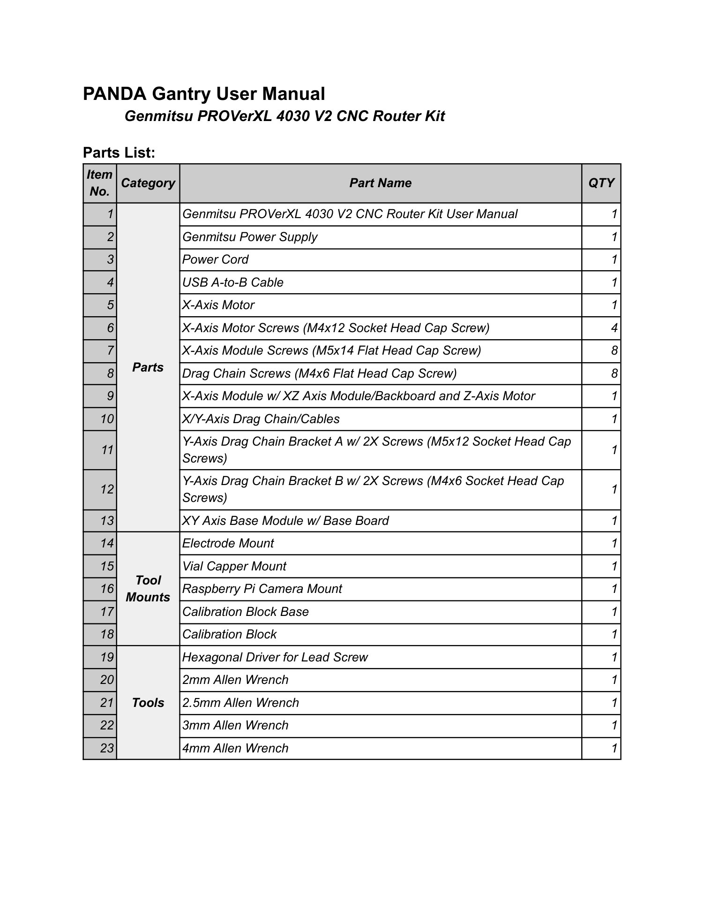
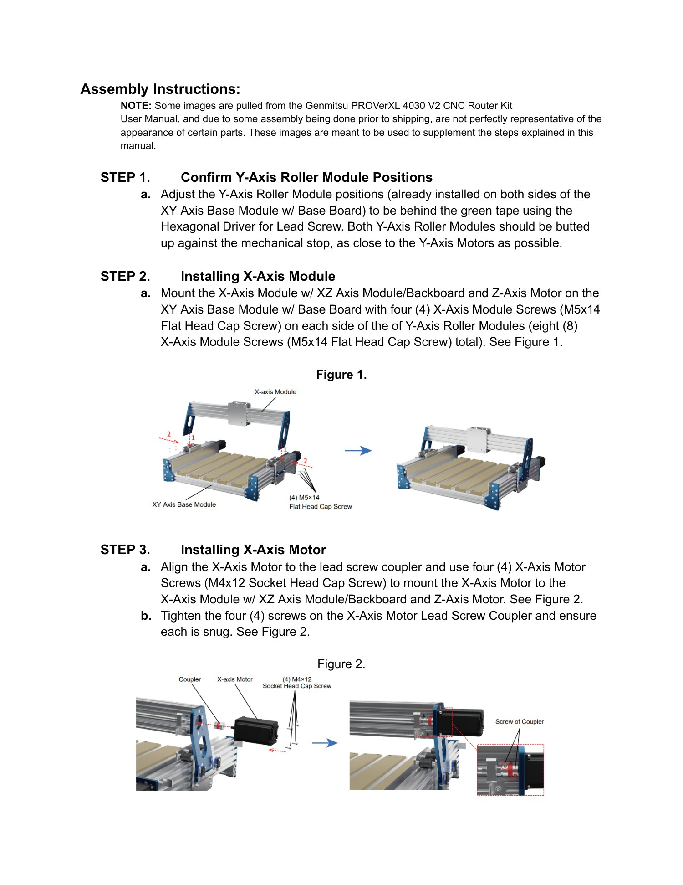
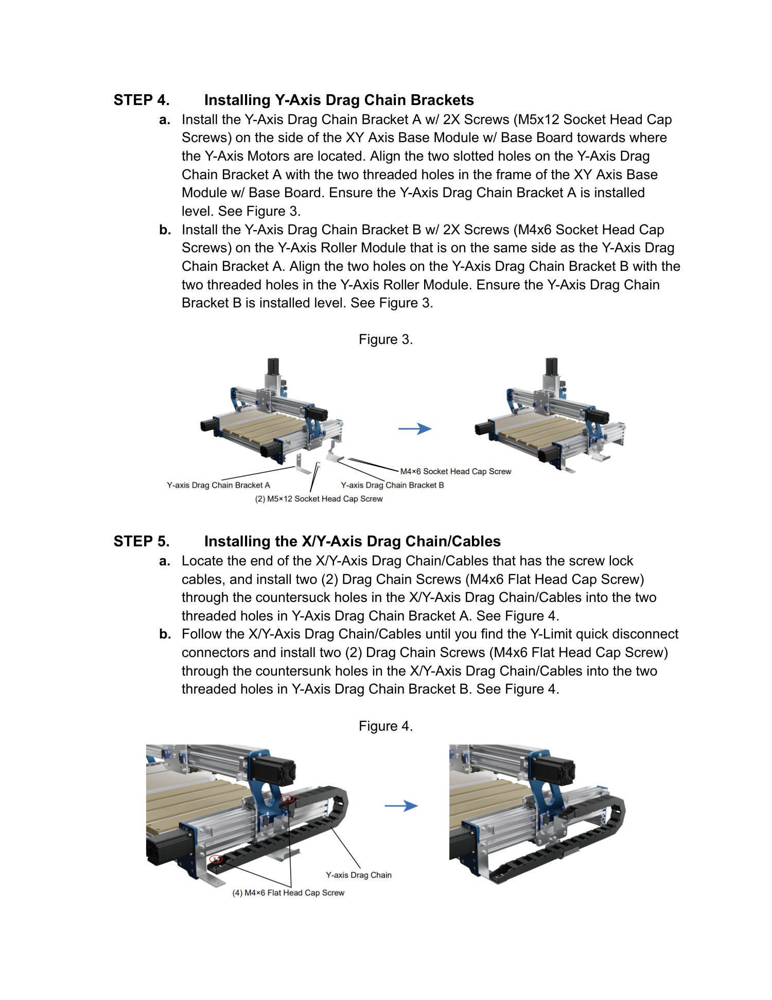
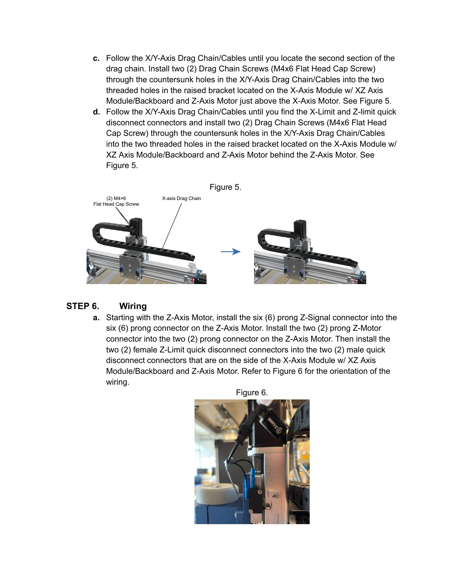
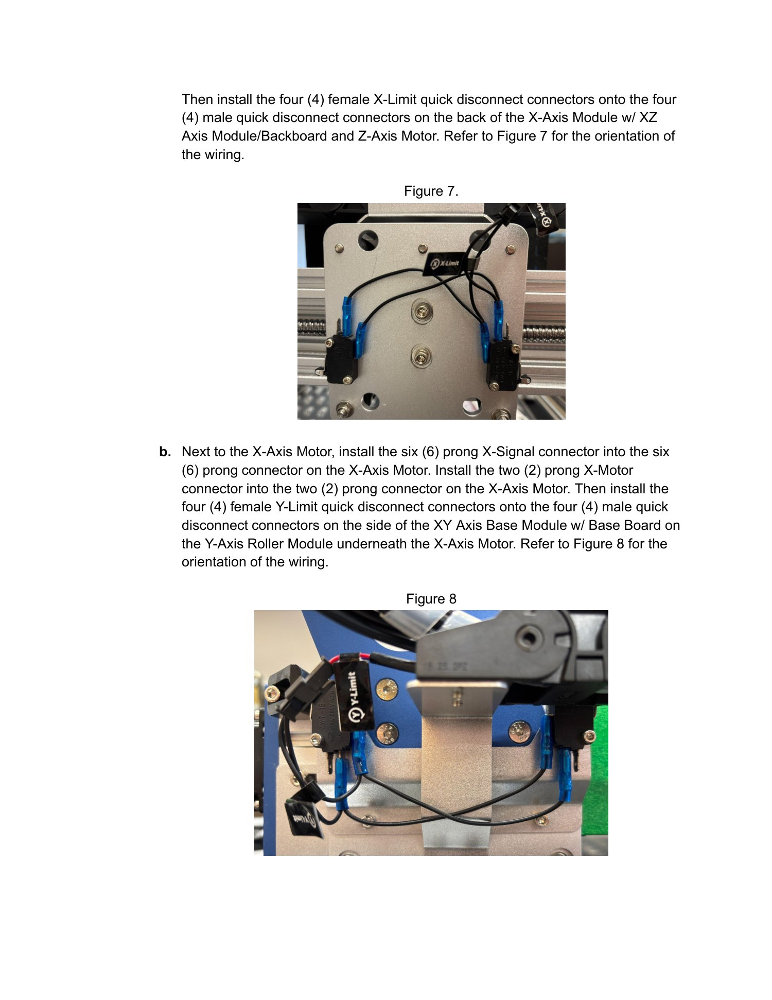
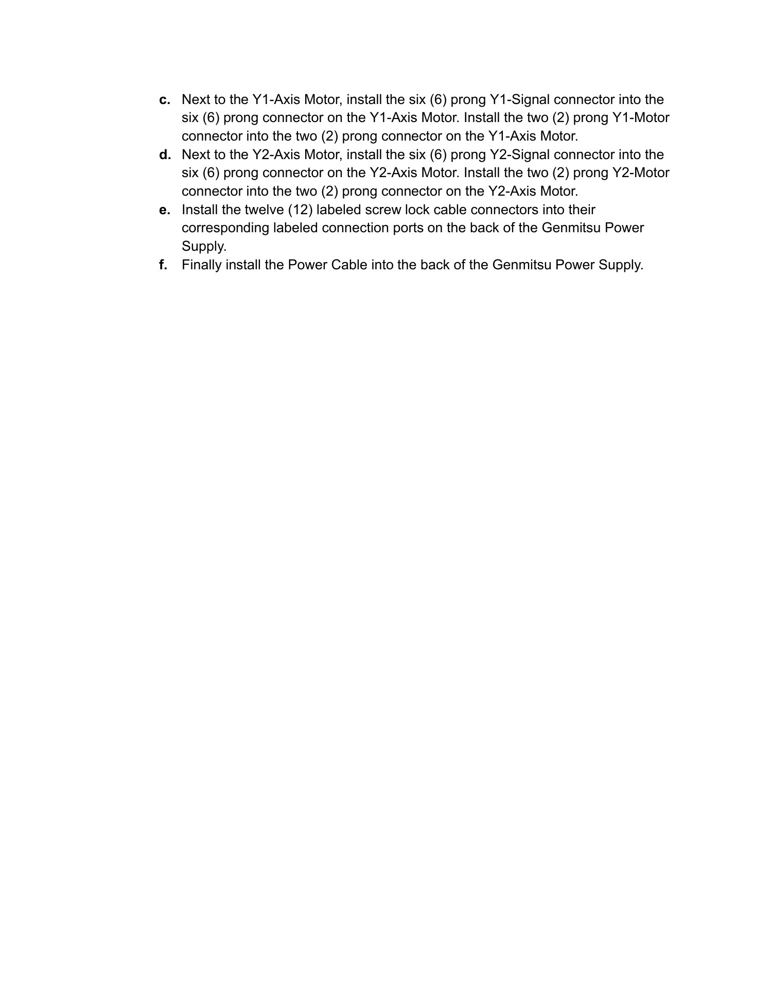

Gantry build guide · PANDA · legacy
PANDA Gantry
Legacy guide. Confirm the hardware revision and source documentation before assembly. This page preserves the available Rev. 0 source instructions and does not establish current compatibility.
Source: PANDA Gantry User Manual, Rev. 0. The source filename/title is spelled “PANADA”; the document body and this page use “PANDA.”
Parts
- Genmitsu PROVerXL 4030 V2 CNC Router Kit User Manual; Genmitsu power supply; power cord; USB A-to-B cable.
- X-axis motor; four M4x12 socket head cap screws; eight M5x14 flat head cap screws; eight M4x6 flat head cap screws.
- X-axis module with XZ-axis module/backboard and Z-axis motor; X/Y-axis drag chain and cables; Y-axis drag-chain brackets A and B with their supplied screws; XY-axis base module with base board.
- Electrode mount; vial capper mount; Raspberry Pi camera mount; calibration block base; calibration block.
- Hexagonal driver for lead screw; 2 mm, 2.5 mm, 3 mm, and 4 mm Allen wrenches.
Assembly steps
- Confirm Y-axis roller-module positions. Use the hexagonal lead-screw driver to adjust the modules, already installed on both sides of the XY-axis base module, behind the green tape and against the mechanical stop as close to the Y-axis motors as possible.
- Install the X-axis module. Mount the X-axis module with XZ-axis module/backboard and Z-axis motor using four M5x14 flat head cap screws on each side of the Y-axis roller modules, eight total.
- Install the X-axis motor. Align it to the lead-screw coupler, mount it with four M4x12 socket head cap screws, and snug the four coupler screws.
- Install the Y-axis drag-chain brackets. Install bracket A on the XY-axis base-module frame toward the Y-axis motors and level it. Install bracket B on the Y-axis roller module on the same side and level it.
- Install the X/Y-axis drag-chain and cables. Secure the screw-lock-cable end to bracket A with two M4x6 flat head cap screws. Secure the end by the Y-limit quick disconnects to bracket B with two more. Secure the second section above the X-axis motor and the section behind the Z-axis motor using two screws at each location.
- Wire the gantry. Connect the Z signal and motor connectors, then the Z-limit connectors. Connect the four X-limit quick disconnects. Connect the X signal and motor connectors and four Y-limit connectors. Connect the Y1 and Y2 signal and motor connectors. Connect the twelve labeled screw-lock cables to their matching ports on the Genmitsu power supply, then connect the power cable.
Related guides
The source does not include a software setup section. For current software and calibration instructions, continue with the CubOS documentation and, where applicable, the CubXL+ / PANDA calibration block guide.
Illustrated source manual
Read the original assembly figures and parts tables below. These pages were retrieved from KABLab on September 22, 2026. Open the source Google Doc for later changes.
View all 6 illustrated pages





